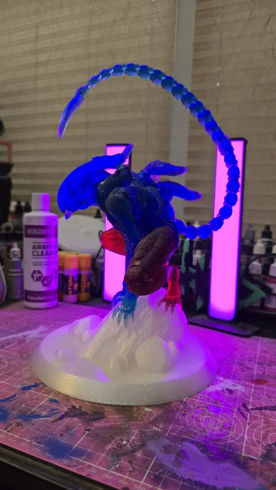
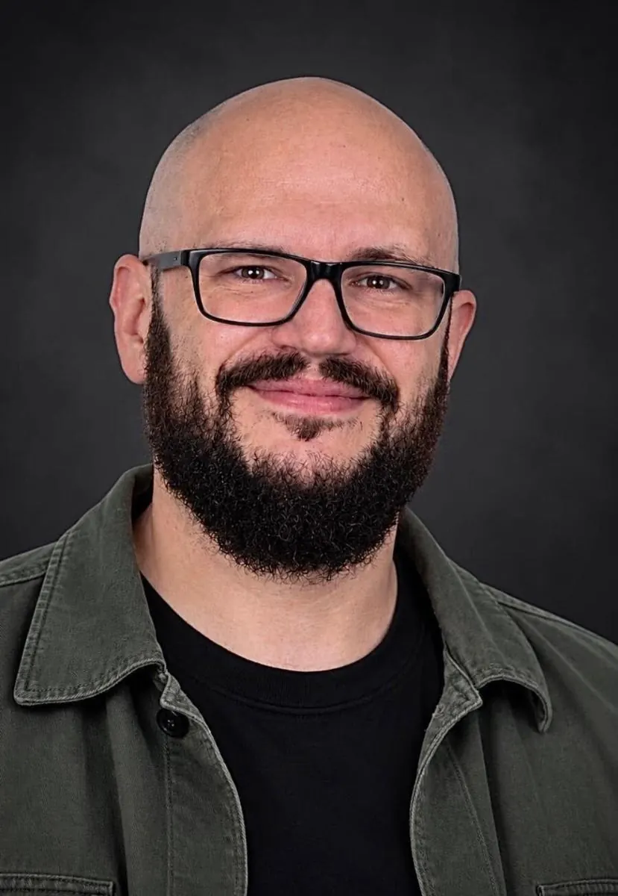

RESIN.
PAINT.
OBSESSION.
Characters pulled from the screen and dragged into the real world. Big statues. Dirty brushes. Late nights. No assembly-line bullshit.
ENTER THE ARCHIVE ↗SELECTED WORK
THE ARCHIVE
The heavy hitters up front. The rest of the journey right here — including earlier pieces that show how the work has evolved.
THE WORKSHOP
Resin prints. Assembly. Priming. Airbrush passes. Brushwork. Mistakes, fixes, and the occasional happy accident.
Open a featured project to see its process photography where available. Work-in-progress shots are kept separate from the finished gallery.
SEE THE PROJECTS ↗

MEET METALHED
I'm a UK-based collectible figure and statue painter with a weakness for monsters, sci-fi, wrestling icons, fantasy and all things heavy.
My work spans resin printing, preparation and painting — taking character sculpts and turning them into physical pieces with personality. The archive is part of the story too: no pretending the early work never happened.
Not a factory. Not a corporate studio. Just a lifelong love of making cool things real.
LET'S MAKE SOMETHING.
Interested in custom pet statues or collectible painting? This site is a portfolio first, but commissions are part of the picture.
This is a placeholder — enquiries are not yet connected. No messages are collected or sent from this preview.